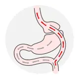
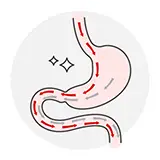
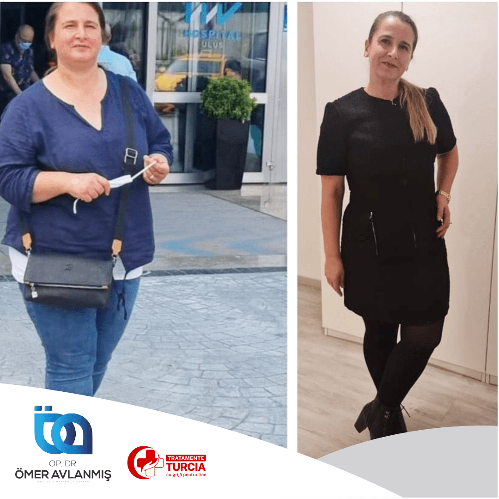
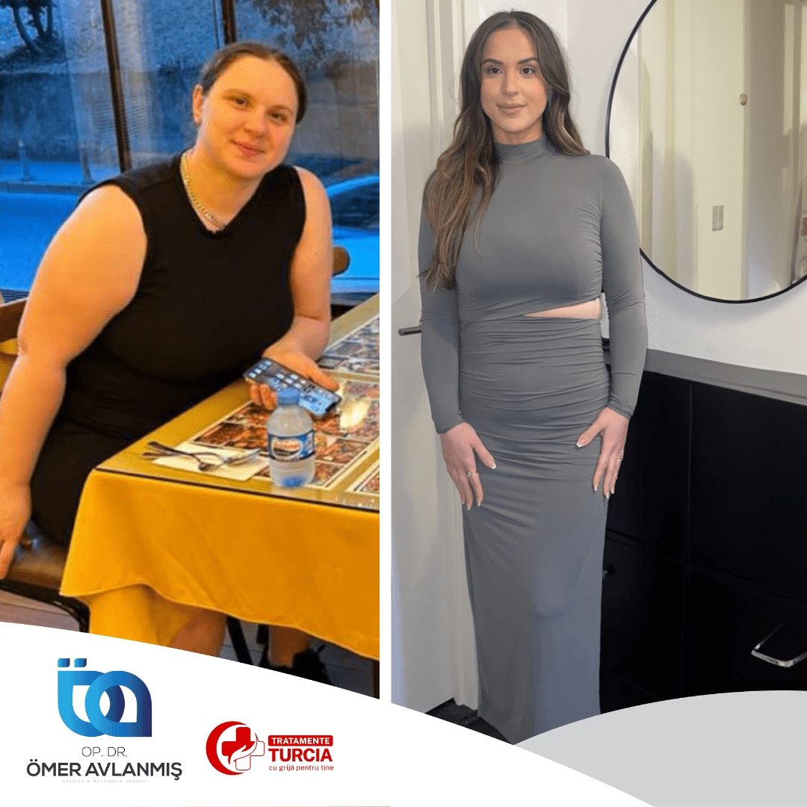
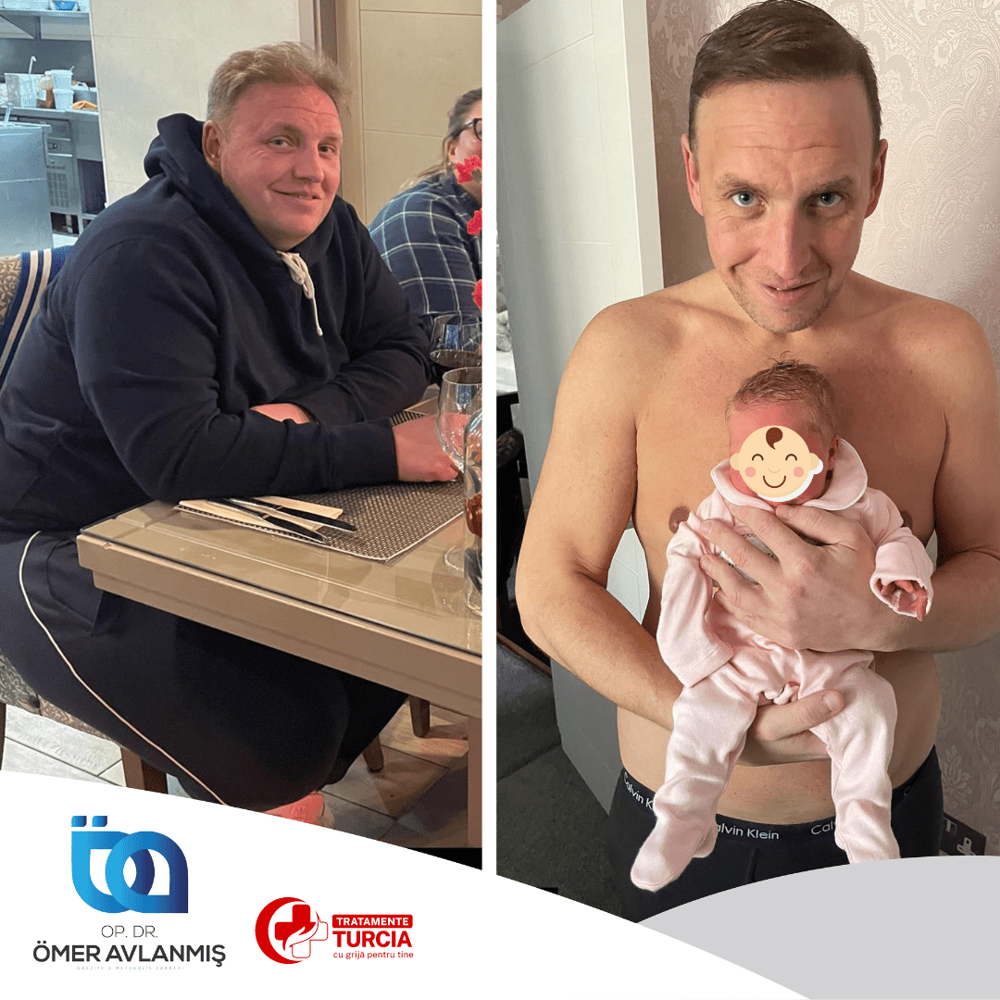
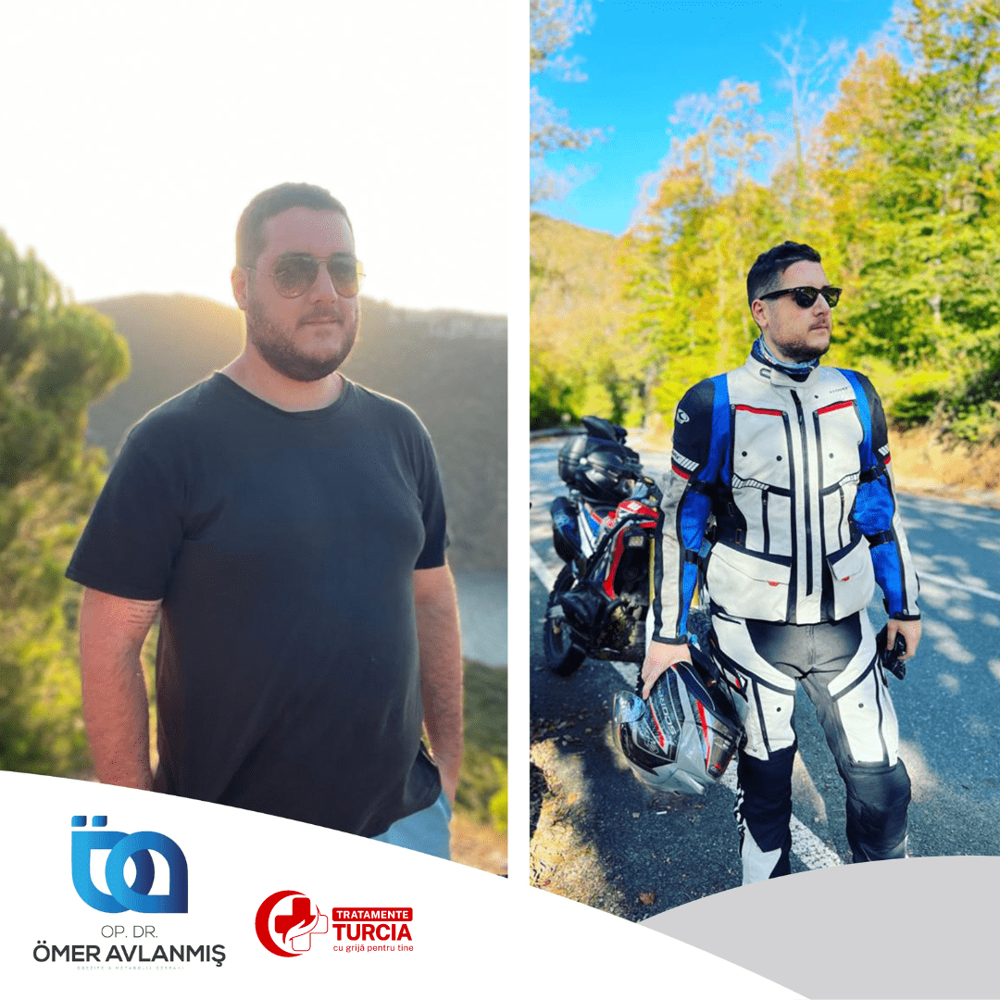
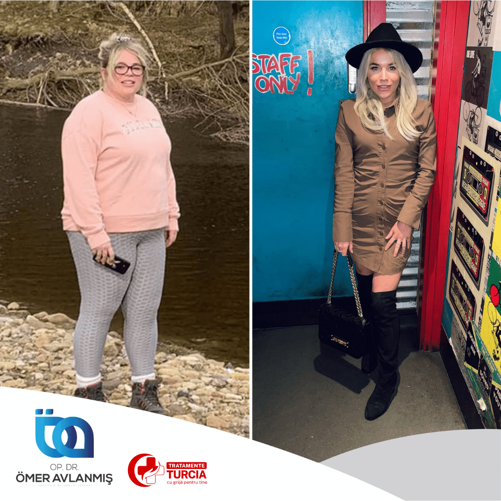
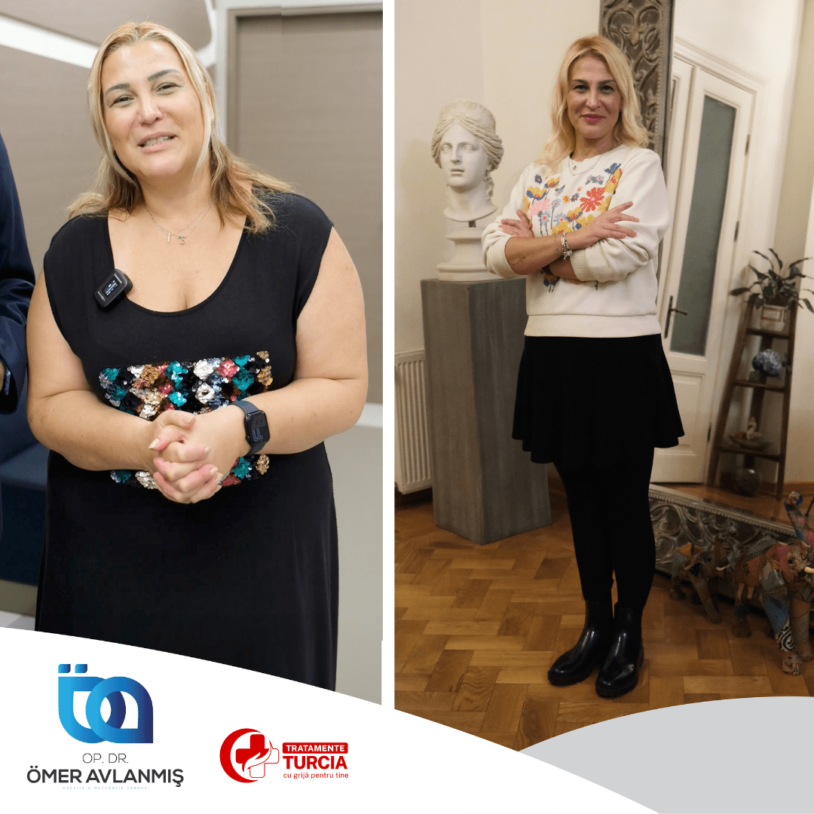
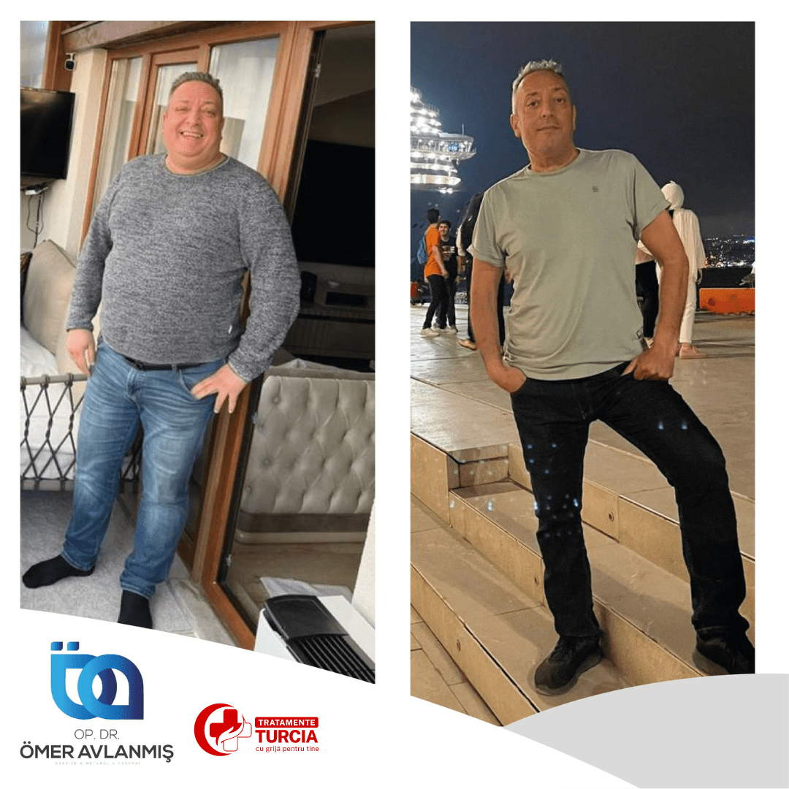
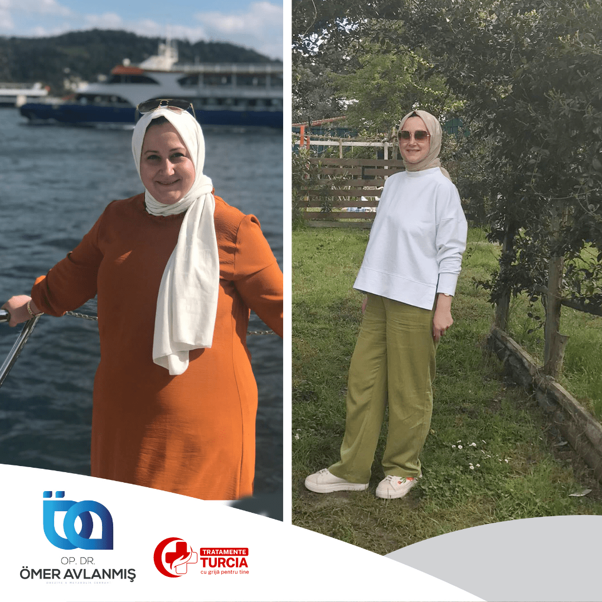

Ce este operația Gastric Bypass?
Intervenția chirurgicală de bypass gastric presupune izolarea completă a unei mici porțiuni din stomac față de restul stomacului. Prin intermediul acestei intervenții, alimentele vor ajunge numai în porțiunea superioară a stomacului. Pentru a asigura tranzitul digestiv, la acest stomac format se conectează o parte din intestin, care va prelua alimentele înghițite.
Scopul este ca bolul alimentar să ocolească stomacul și o porțiune variabilă din intestin, pentru a scădea absorbția principiilor alimentare.
Pacienții care recurg la bypass gastric mănâncă puțin, dar neselectiv, pentru că zaharurile și grăsimile nu trec prin suprafața de intestin care face posibilă absorbția lor. Senzația de sațietate apare foarte repede.

Avantajele operației Gastric Bypass
- Ameliorarea condițiilor medicale asociate obezității: hipertensiunea, boala de reflux gastroesofagian, durerile de spate și articulare, steatoza hepatică, apneea obstructivă în somn
- Afecțiuni precum trombolismul venos și edemul picioarelor dispar în totalitate
- Îmbunătățirea simptomatologiei diabetului zaharat — glicemia poate scădea fără medicație, boala putând chiar intra în remisie
- Pierdere în greutate sigură, menținută pe termen lung, cu riscuri și efecte secundare minime
- Stomacul se umple după câteva înghițituri, generând rapid senzația de sațietate
- Intervenția este efectuată laparoscopic, iar recuperarea este rapidă și ușoară
- Spitalizare de cca 48 de ore, dureri postoperatorii limitate, recuperare fără cicatrici

Căror persoane le este recomandat Gastric Bypass?
Operația de bypass gastric, denumită și Roux-en-Y, este indicată pacienților care suferă de obezitate morbidă avansată (indice de masă corporală mai mare de 50), tulburări de alimentație sau diabet zaharat decompensat — persoane care necesită o reducere semnificativă a excesului de greutate într-un timp relativ scurt. Recomandarea va fi făcută de medicul specialist în urma consultului și a analizelor preoperatorii.
Cum decurge intervenția?
Intervenția chirurgicală durează aproximativ 120 de minute, se efectuează pe cale laparoscopică, iar spitalizarea durează cca 48 de ore.
Operația constă în capsarea părții superioare a stomacului, acesta fiind transformat într-un săculeț superior de aproximativ 15-20 ml și un stomac inferior. Intestinul subțire va fi împărțit la 50 de cm de la nivelul duodenului, fiind adus la acest săculeț de care va fi cusut. Se creează astfel un circuit în formă de Y, al cărui beneficiu este legat de gradul absorbției alimentelor în organism.
Vei putea mânca cantități mici de alimente solide, care vor fi evacuate în intestinul subțire fără a mai ajunge în zonele de absorbție maximă — astfel sunt absorbite mult mai puține calorii, iar digestia rămâne completă.
Recuperarea și urmărirea postoperatorie
După intervenție, este posibil ca energia fizică să fie redusă din cauza restricțiilor alimentare și a stării generale postoperatorii; recuperarea nivelului energetic normal poate dura aproximativ 3 luni. Rezultatele intervenției persistă mulți ani.
Urmărirea post-operatorie este foarte importantă: prezintă-te la controalele periodice stabilite cu medicul, urmează planul de tratament prescris și respectă recomandările făcute.
Din cauza faptului că alimentația este redusă cantitativ, există riscul de carențe pentru principalele minerale și vitamine — se recomandă suplimentarea cu multiminerale și vitamine, monitorizată prin analize de sânge.
Rezultatele pacienților noștri








De ce să alegi Tratamente Turcia by Medicross
- Abordare personalizată, adaptată la nevoi diferite și unice pentru fiecare pacient.
- Suntem asociați cu spitale din Turcia, Istanbul, cu experiență îndelungată.
- Intervențiile medicale sunt realizate în centre dedicate.
- Împreună cu partenerii noștri am creat un întreg program dedicat pacienților.
- Asigurăm translator, fiind conștienți că pacienții noștri au nevoie de comunicare permanentă.
- Echipa medicală va fi în contact cu tine oricând ai nevoie, atât înainte, cât și după operație, pe termen lung.